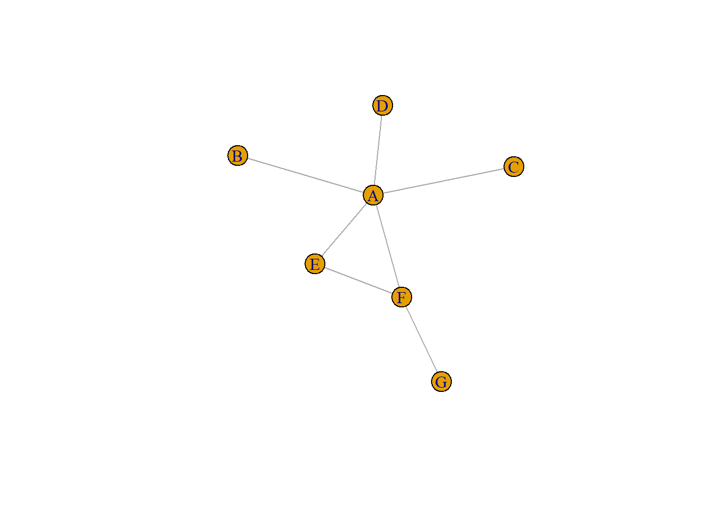
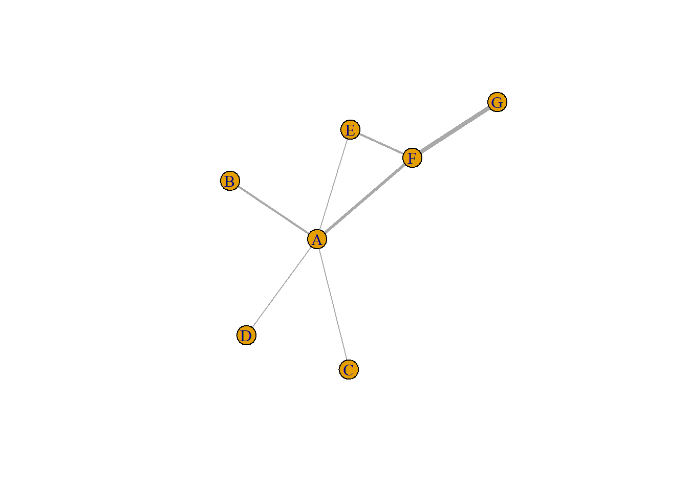
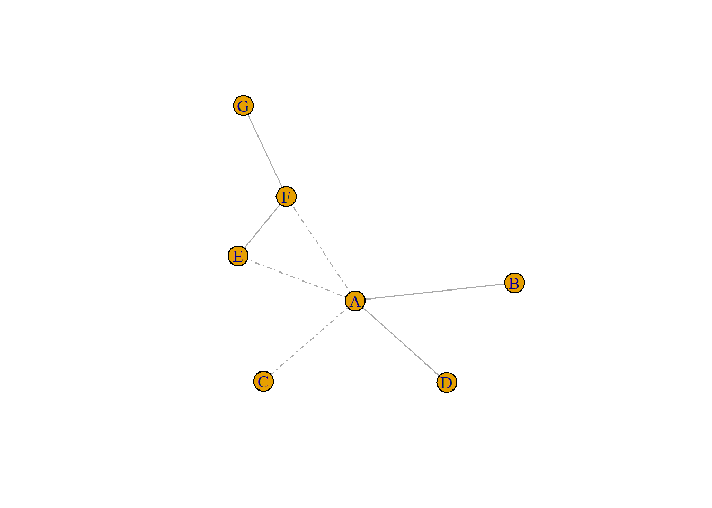
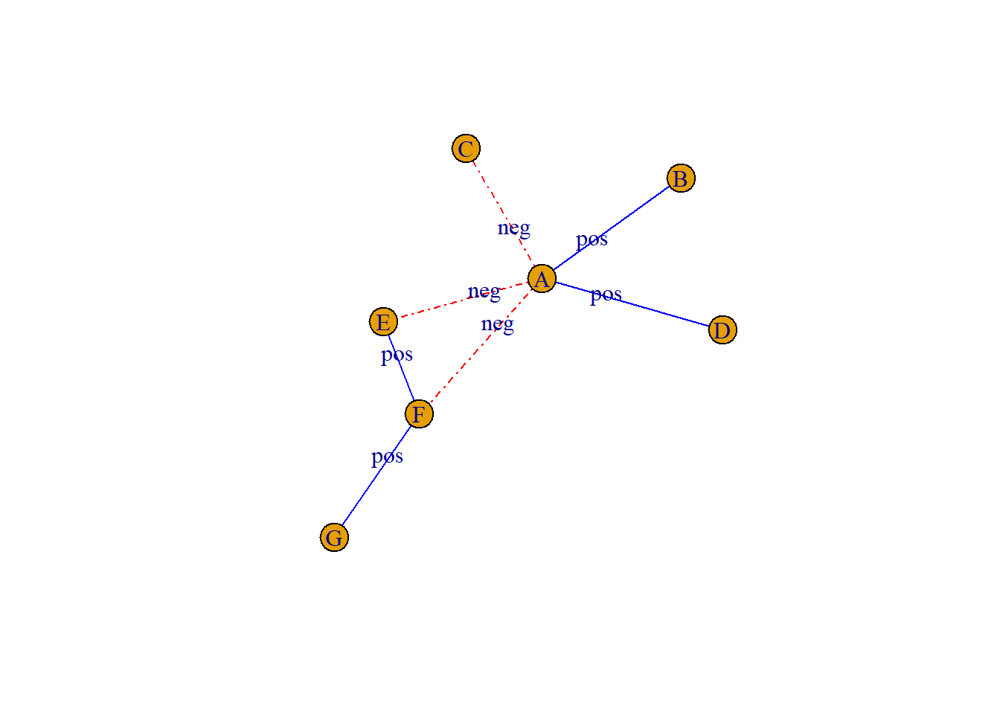
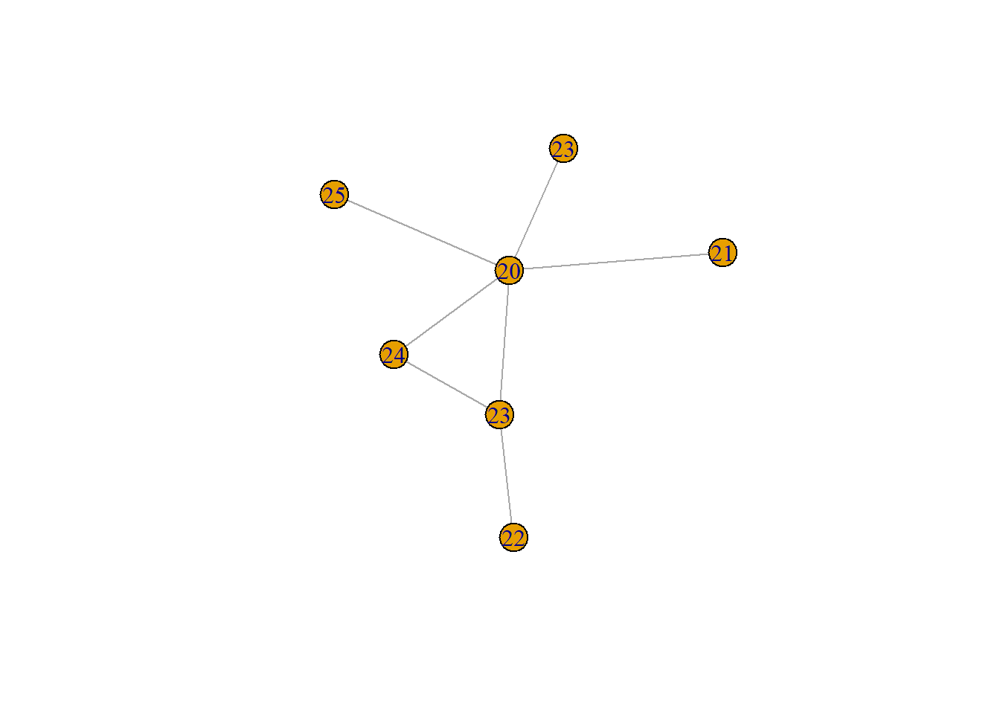
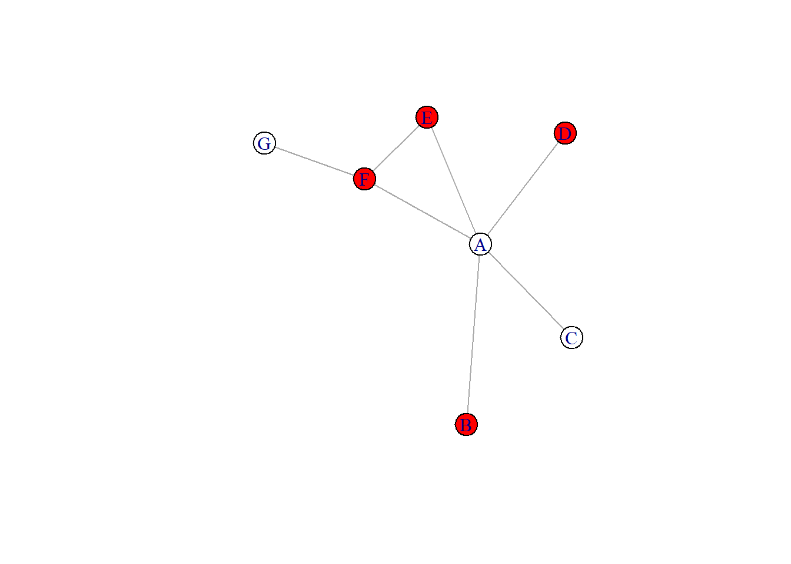
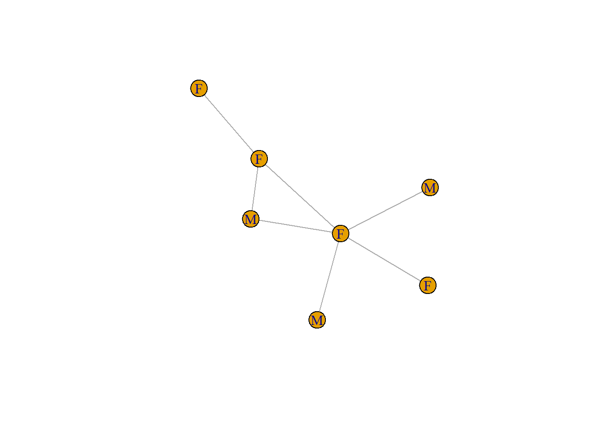
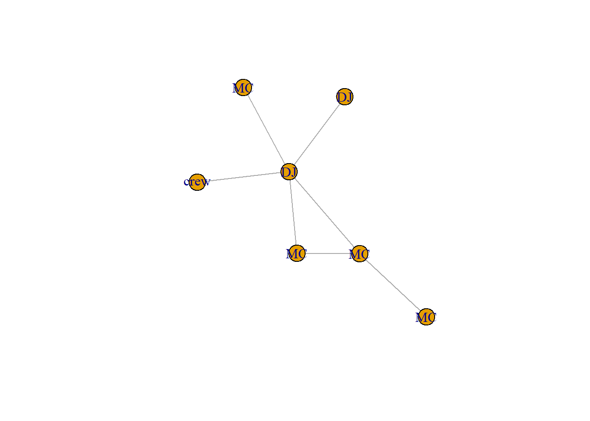
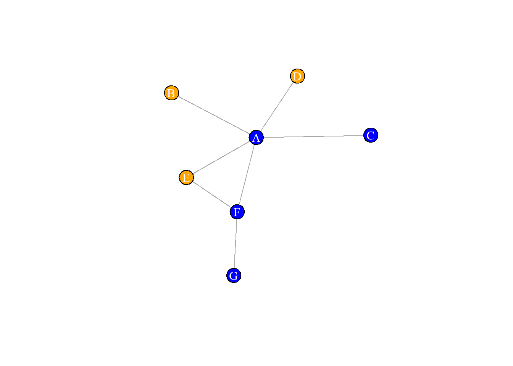
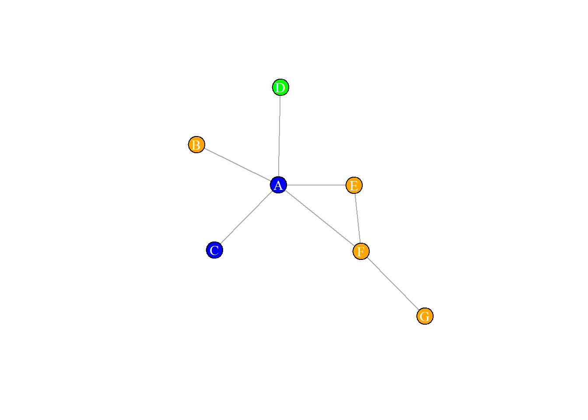

library(igraph)
library(ADAPTSNA)2 One Mode Network Objects
2.1 Structuring One Mode Network Data
TALK HERE ABOUT NODE CHARACTERISTICS
TALK HERE ABOUT EDGE CHARACTERISTICS
vertices.df <- load_data("Node data.csv")
edges.df <- load_data("Edge data.csv")Let’s take a look at these one at a tine to get an idea of what information we have.
head(edges.df) from to freq affinity
1 A B 2 pos
2 A C 1 neg
3 A D 1 pos
4 A E 1 neg
5 A F 3 neg
6 E F 2 posWe have an edgelist between A-F people. In this edgelist we have the frequency of interaction and the affinity (i.e. if they are positive or negative interactions).
head(vertices.df) name age role gender
1 A 20 DJ F
2 B 25 MC M
3 C 21 DJ F
4 D 23 crew M
5 E 24 MC M
6 F 23 MC FWe have their name, age and two categorical variables about them, their role (if they are a DJ or something else) and their sex (Male/Female).
Now I can create a network object in igraph using the familiar method you are used to - graph_from_data_frame(). However, We want this network to have all the information possible. For this, we don’t just want the edge information, but also the node level information. To do this, we tell R that the data = the edgelist.df (a familiar step to you pros now!), and the vertex characteristics are stored in the object we created earlier, vertices.df. Think of this step as simply pulling information from your edgelist (E) and your vertices dataset (V) into your network object.
graph <- graph_from_data_frame(d = edges.df, vertices = vertices.df , directed = FALSE)
graphIGRAPH 87329a2 UN-- 7 7 --
+ attr: name (v/c), age (v/n), role (v/c), gender (v/c), freq (e/n),
| affinity (e/c)
+ edges from 87329a2 (vertex names):
[1] A--B A--C A--D A--E A--F E--F F--GNice work! You can see the vertex information is stores as v characteristics (name, age, role and gender. The edge characteristics are stored as e characteristics - freq, affinity. Now lets visualise the network and see what we have.
plot(graph)
Here comes the fun part. First, let’s start with the edge characteristics. Rapid fire, we can visualise these in may different ways.
2.2 Exploring Edge Characteristics
We will create a few visuals to demonstrate the information about these edges. The main think you need to remember is that you access the edge information of your network using the E() option.
Let’s start with the numeric information we have about the edges. First, we will change the width of the lines between nodes to reflect the frequency of interactions using the edge.width argument and the freq edge characteristic.
plot(graph, edge.width = E(graph)$freq)
Or, we can label the nodes with the frequency to tell a similar story. We do this using the edge.label argument.
plot(graph, edge.label = E(graph)$freq)
What do these visuals tell you about their relationships compared to the first one?
Now let’s use the categorical information to tell a slightly different story. Let’s see what we can do to demonstrate the levels of affinity between these individuals. First, we will change the line type to reflect the different levels. To do this, we first create a logical comparison using an ifelse statement. This checks if the affinity attribute of each edge is equal to “pos”. This will return a logical vector (TRUE or FALSE for each edge). If the edge is “pos” then it will return an item of the vector “solid” if it is false (i.e. “neg”), then it will return “dotdash”. We can then visualise this in the network using the edge.lty (lty means line type) argument.
#change the line type using edge.lty to match the affinity
type_affinity <- ifelse(E(graph)$affinity == "pos", "solid", "dotdash")
# Plot plus colour
plot(graph, edge.lty = type_affinity)
Now, let’s combine a few approaches. We will use the same ifelse statement but will apply it to the colours of the edges. We will also change the edge labels to reflect the affinity label alongside the line type.
affinity <- ifelse(E(graph)$affinity == "pos", "blue", "red")
plot(graph, edge.color = affinity, edge.label = E(graph)$affinity, edge.lty = type_affinity)
2.3 Exploring Vertex Characteristics
Now let’s turn to the rest of our data and explore the network’s vertex attributes. Like before, you access the vertex information in your graph object using the V() option.
We will start with the numerical characteristics of the attributes - their age. First, let’s change the labels to show their age.
plot(graph, vertex.label = V(graph)$age)
Now, let’s change the colours based on certain parameters that we set using an ifelse() statement.
over_22 <- ifelse(V(graph)$age > 22, "red", "white")
plot(graph, vertex.color = over_22, veterx.label.color = "Black")
Next, let’s work with the categorical variables. First we can change the labels to show these, and then change the colours. See if you can follow the following code chunks and think about what these new networks tell us.
plot(graph, vertex.label =V(graph)$gender)
plot(graph, vertex.label = V(graph)$role)
gender <- ifelse(V(graph)$gender == "M", "orange", "blue")
plot(graph, vertex.color = gender, vertex.label.color = "white")
We have done a lot with ifelse statements here. This are great for setting direct parameters or for working with dichotomous categories (i.e. the male/female one we have). However, we may want to create colours for categories that have more than one and then visualise it. We are going to use a different package, called dplyr to manipulate what we have to create a vertex attribute that reflect colours based on a categorical variable (their role).
library(dplyr)To do this, we will return to the original dataframe storing information about the vertex characteristics. Then, we will use the mutate() function to create a new variable that reflect a colour for each role. See if you can follow the logic and look at what we end up with.
vertices.df <- vertices.df %>%
mutate(role_colour = ifelse(role == "DJ", "blue", role))
vertices.df <- vertices.df %>%
mutate(role_colour = ifelse(role == "MC", "orange", role_colour))
vertices.df <- vertices.df %>%
mutate(role_colour = ifelse(role == "crew", "green", role_colour))
head(vertices.df) name age role gender role_colour
1 A 20 DJ F blue
2 B 25 MC M orange
3 C 21 DJ F blue
4 D 23 crew M green
5 E 24 MC M orange
6 F 23 MC F orangeHere is the breakdown of the above code, the mutate function creates a new variable (what we call role_colour). We then use an ifelse() statement again to replace this new variable with the name of a colour that matches each category that we have. So, the first line adds the colour “blue” if role (our original categorical variable) is set to “DJ”. If it is not, we replace it with the rest of the role variable. You could just leave that blank, or NA and then those cells would reflect that. So, if you were to run only that first line, you would see a new column in your dataset with some cells saying blue while the rest refelect the other categories. The next few lines of code repeat the same logic, but there is a small difference. Instead of replacing the new variable (role_colour) with the old variable (role) if the logic in the ifelse() statement if false as we did in the firs tline, we replace it with the new variable. We do that because we want to keep the replacements we have done already already.
Now, let’s recreate our new network object following the above method.
graph <- graph_from_data_frame(d = edges.df, vertices = vertices.df , directed = FALSE)
graphIGRAPH 87f29bb UN-- 7 7 --
+ attr: name (v/c), age (v/n), role (v/c), gender (v/c), role_colour
| (v/c), freq (e/n), affinity (e/c)
+ edges from 87f29bb (vertex names):
[1] A--B A--C A--D A--E A--F E--F F--GThe network has the new v characteristic that we created - role_colour. Now we can visualise this network with the different colours for the roles all represented on the visual.
plot(graph, vertex.color = V(graph)$role_colour, vertex.label.color = "white")
2.4 Summary
3 THOUGHTS
– Need to restructure from Tom’s ADAPT class.